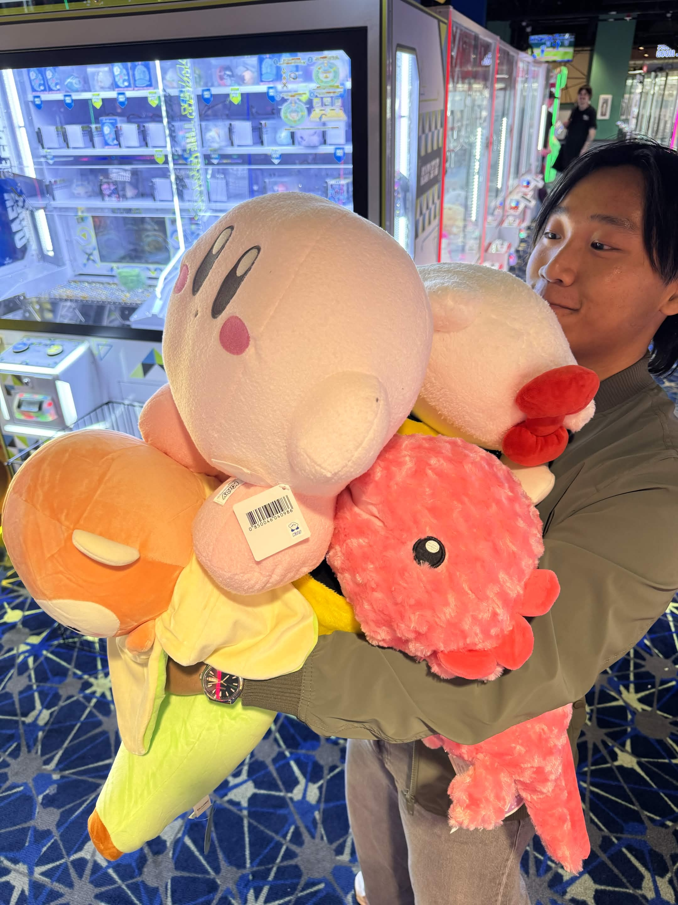
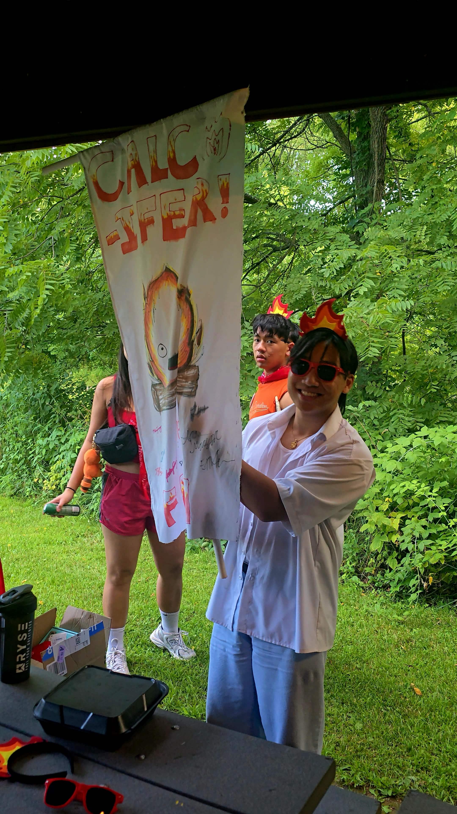
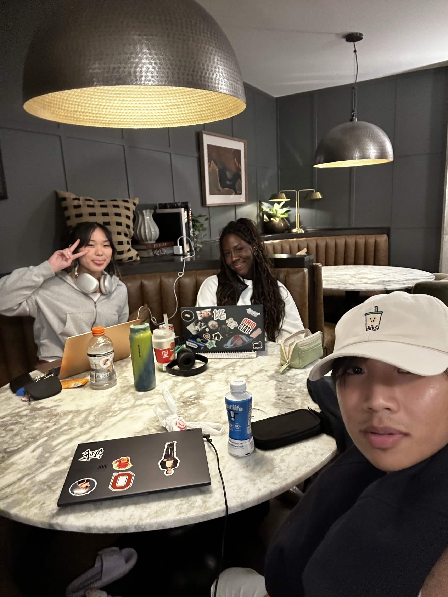
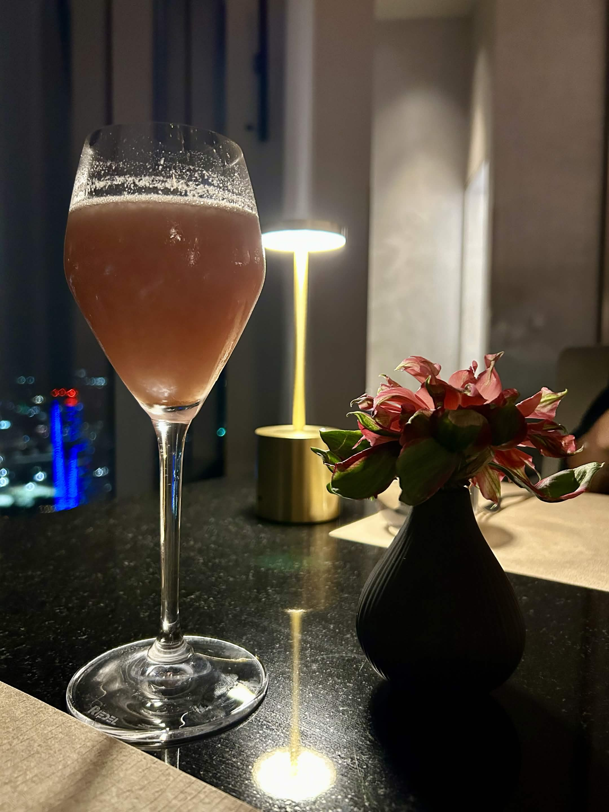
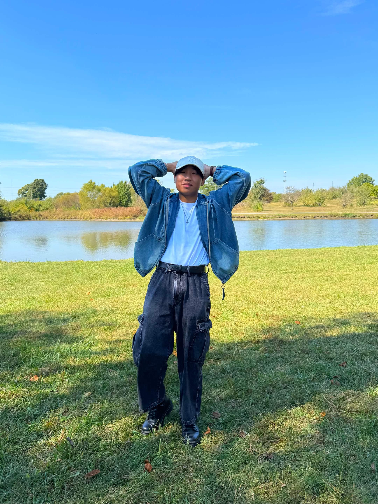

Who I am
I'm a recent graduate from The Ohio State University with a degree in Data Analytics and a specialization in Computational Analytics. I'm drawn to problems where messy, real-world data can be shaped into something that actually changes a decision.
My work spans optimization modeling, Bayesian statistics, energy analytics, business intelligence, and more. I believe in the power of data-driven decision-making. As they say, "Analytics is the use of data to turn uncertainty into insight." - Daniel Keys Moran
Background & research
UVSA Midwest - Analytics & Web
Volunteered with the Union of Vietnamese Student Associations across the Midwest, supporting analytics initiatives and collaborating on data-driven projects and web development efforts. Led data reporting for regional programming, helping the organization understand engagement trends and resource allocation.

Undergraduate Research - Diffusion & Random Walks
Participated in undergraduate research focused on modeling diffusion through random walks and reaction-diffusion systems. This experience sharpened my intuition for probability, stochastic processes, and computational simulation - skills that directly inform my approach to Bayesian modeling.
 View Research Poster
View Research Poster
Outside of work
Lion Dancing
I'm a Lion Dancer and coach. Our team performs every Chinese New Year for Ohio State's APIDA culture show as well as for Linh Son Pagoda. It's physically demanding, but the bond it creates with my teammates and community makes it one of the most meaningful things I do outside of work.

Hobbies
Besides that, I enjoy exercising, traveling, eating, and spending time with friends.






